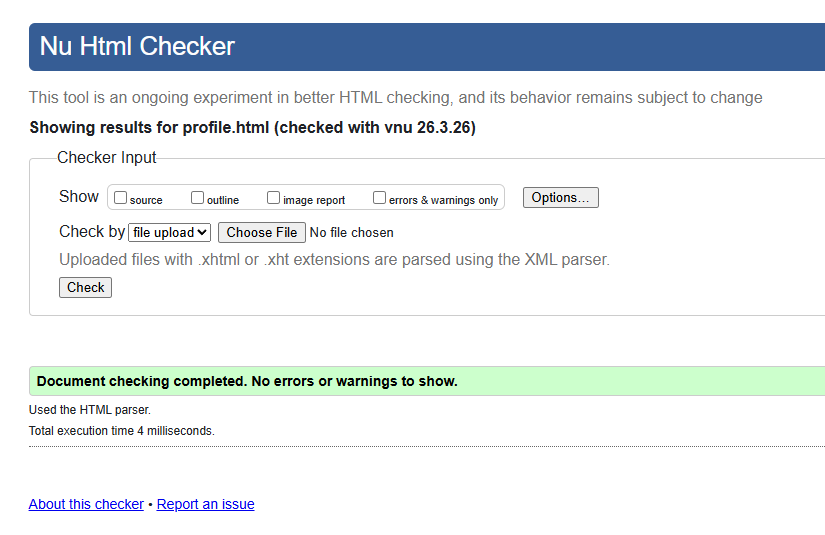
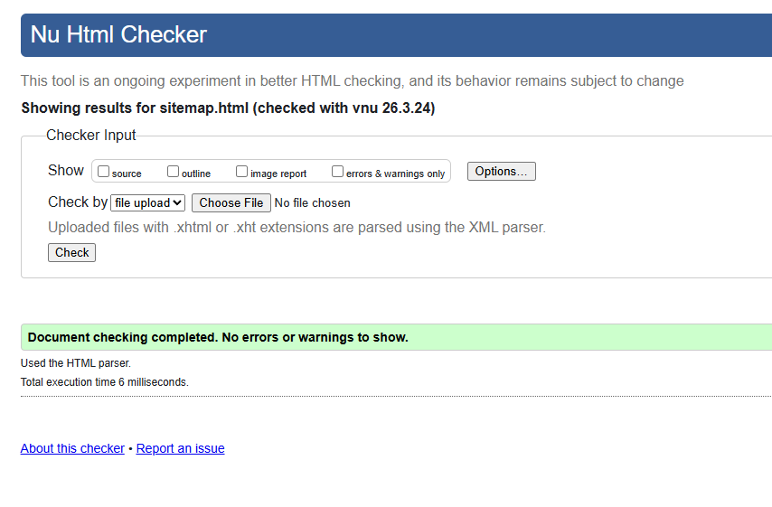
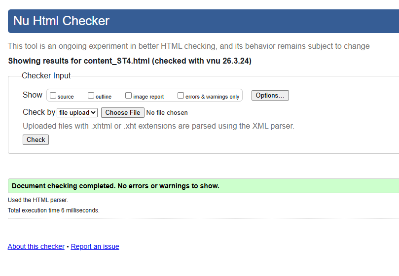

User Profile Validation Report
The profile page uses prompt-based interaction, so I focused on keeping the visible HTML output area clean and well structured while the JavaScript handled the updates. The final validation run was clean after removing the remaining wrapper and void-element issues.

Back to Page Editor Page
Sitemap Validation Report
The sitemap needed checking for valid SVG structure, readable labels, and correct link targets. I added the missing section heading and corrected the heading order so the page now validates cleanly without changing the diagram itself.

Back to Page Editor Page
Content Page Validation Report
`content_ST4.html` validated after the layout-only wrappers were converted from sectioning elements and the image tags were cleaned to match HTML5 syntax. I also checked the internal navigation and image alt text before saving the final evidence image.
